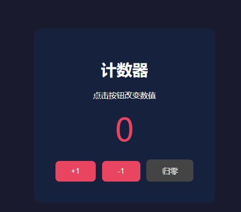
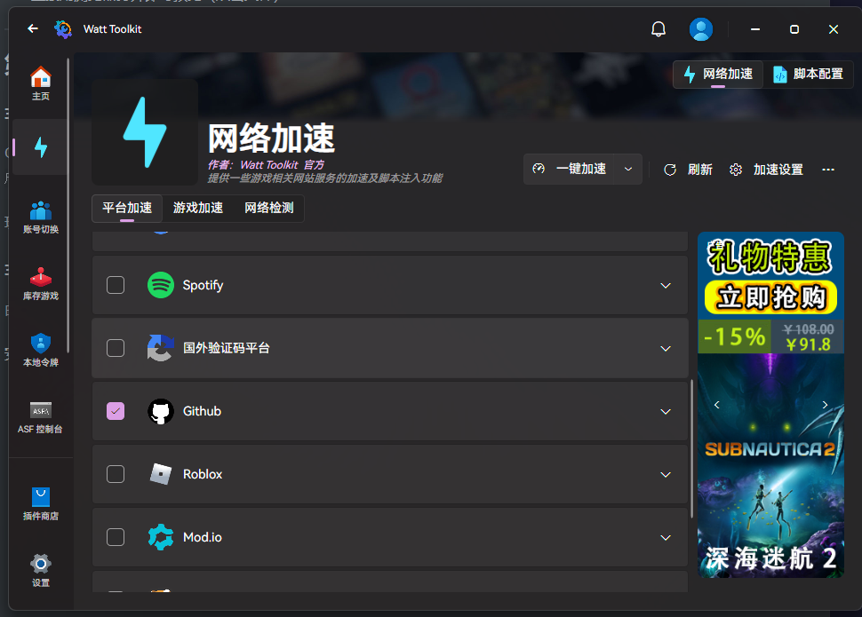
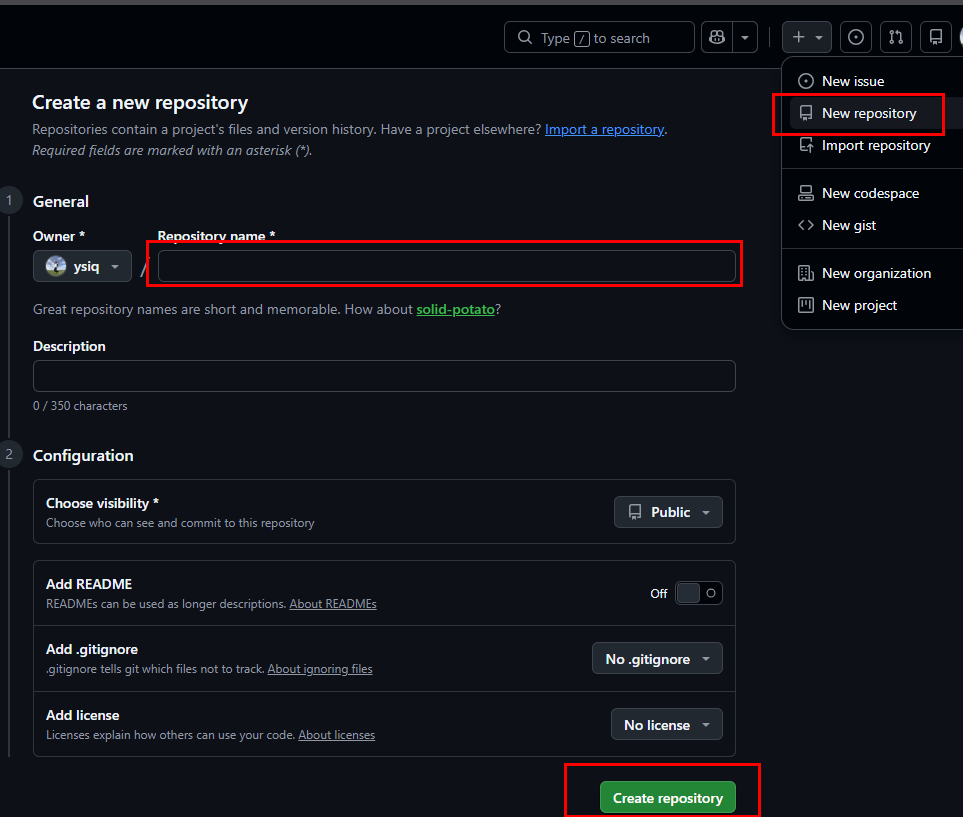
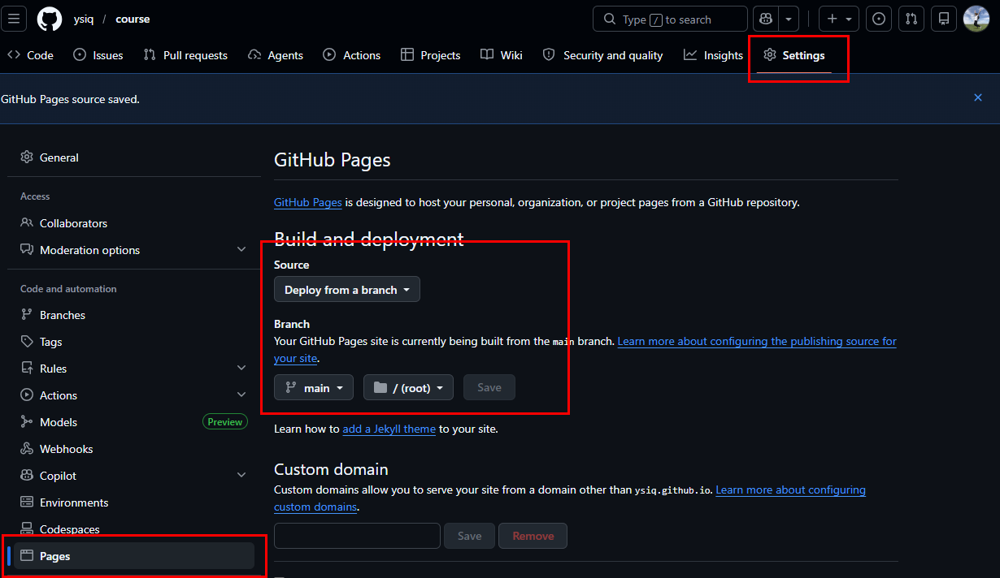
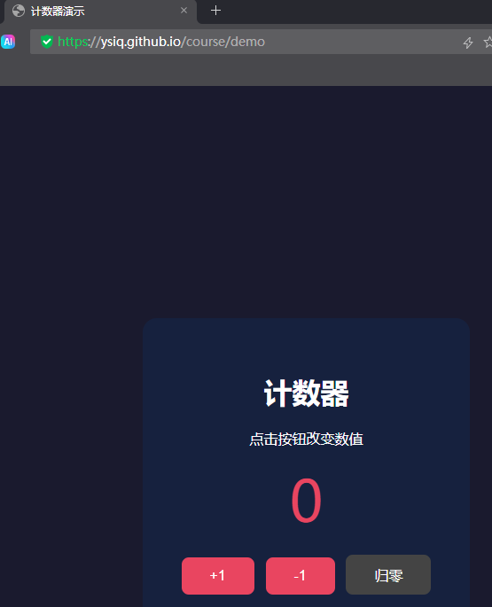

第9课时：前端开发与 GitHub Pages 部署
课时目标
- 了解前端开发三件套（HTML / CSS / JavaScript）
- 使用 AI 辅助生成前端页面代码
- 掌握 GitHub Pages 托管静态网页
- 将生成的页面部署上线，外网可访问
第一部分：前端基础知识
1.1 什么是前端
前端是用户直接看到和交互的界面部分。一个网页由三层构成：
| 层 | 技术 | 作用 |
|---|---|---|
| 结构 | HTML | 定义页面内容（标题、按钮、图片等） |
| 样式 | CSS | 控制外观（颜色、大小、布局） |
| 行为 | JavaScript | 实现交互（点击响应、数据请求） |
1.2 HTML 核心标签
<!DOCTYPE html>
<html>
<head>
<meta charset="UTF-8">
<title>页面标题</title>
</head>
<body>
<h1>一级标题</h1>
<p>段落文本</p>
<button id="myBtn">点击我</button>
<div>容器块</div>
</body>
</html>1.3 CSS 基础语法
/* 选择器 { 属性: 值; } */
h1 {
color: blue;
font-size: 24px;
}
button {
background-color: #4CAF50;
color: white;
padding: 10px 20px;
border: none;
border-radius: 4px;
}1.4 JavaScript 基础
// 找到按钮元素
var btn = document.getElementById('myBtn');
// 绑定点击事件
btn.addEventListener('click', function() {
alert('按钮被点击了！');
});1.5 综合演示：计数器页面

将以下代码完整复制，保存为 demo.html，双击用浏览器打开即可运行。
<!DOCTYPE html>
<html>
<head>
<meta charset="UTF-8">
<title>计数器演示</title>
<style>
/* CSS：控制样式与布局 */
body { font-family: sans-serif; display: flex; justify-content: center; align-items: center; min-height: 100vh; margin: 0; background: #1a1a2e; color: #fff; }
.card { background: #16213e; padding: 40px; border-radius: 16px; text-align: center; }
.count { font-size: 64px; color: #e94560; margin: 16px 0; }
button { background: #e94560; color: #fff; border: none; padding: 12px 32px; font-size: 16px; border-radius: 8px; cursor: pointer; margin: 4px; }
button:hover { opacity: 0.8; }
</style>
</head>
<body>
<!-- HTML：定义页面结构 -->
<div class="card">
<h1>计数器</h1>
<p>点击按钮改变数值</p>
<div class="count" id="count">0</div>
<button onclick="add(1)">+1</button>
<button onclick="add(-1)">-1</button>
<button onclick="reset()" style="background:#444">归零</button>
</div>
<!-- JS：实现交互逻辑 -->
<script>
var n = 0;
function add(x) { n += x; document.getElementById('count').textContent = n; }
function reset() { n = 0; document.getElementById('count').textContent = n; }
</script>
</body>
</html>•
<style> 标签内的 CSS 控制深色背景、卡片居中、按钮颜色和鼠标悬停效果•
<body> 中的 HTML 标签搭建了卡片、标题和三个按钮•
<script> 里的 JS 定义变量 n，通过 add() 和 reset() 函数操作数值并更新页面显示• 尝试修改 CSS 颜色或 JS 逻辑，保存后刷新浏览器即可看到变化
第二部分：用 AI 生成前端代码
2.1 AI 编程工具
本课程统一使用 Trae（AI 编程工具）生成前端代码。Trae 支持对话生成代码、代码补全、优化建议等功能。
2.2 自由选题，自主设计
学生按自己的想法确定页面主题，例如：
- 个人作品集页面
- 班级通讯录
- 天气预报卡片
- 音乐播放器界面
- 设备监控面板
- 记账本
- 倒计时页面
- 任何你感兴趣的想法
2.3 编写提示词（Prompt）
一个好的 Prompt 应包含：
请生成一个 [你的主题] 的 HTML 页面，要求：
1. 浅色/深色主题
2. 包含 [你想要的功能]
3. 使用卡片式/网格布局
4. 全部放在一个 HTML 文件中（含 CSS 和 JS）示例——设备监控面板：
请生成一个设备监控面板的 HTML 页面，要求：
1. 深色主题
2. 显示温度、光照数值
3. 有开关控制按钮
4. 使用卡片式布局
5. 全部放在一个 HTML 文件中（含 CSS 和 JS）2.4 优化与迭代
- 第一版拿到基础结构后，逐步追加要求
- 迭代 prompt 示例：
- "把温度显示改成圆形进度条"
- "添加一个状态指示灯"
- "把卡片排成 2×2 网格"
- "加一个刷新按钮"
- "点击卡片时弹出详情"
2.5 本地预览
- 将生成的代码保存为
index.html - 直接用浏览器打开即可预览（双击文件）
第三部分：将你的页面部署到 GitHub Pages
3.1 什么是 GitHub Pages
GitHub Pages 是 GitHub 提供的免费静态网页托管服务，可以将 HTML/CSS/JS 文件部署到互联网上，通过 https://用户名.github.io/仓库名/ 访问。
现在我们要把第二部分 AI 生成的页面部署上线。
3.2 使用瓦特工具箱加速 GitHub 访问
由于国内网络环境，访问 GitHub 可能较慢。推荐使用瓦特工具箱（Watt Toolkit） 加速。

安装与使用：
- 下载地址：https://steampp.net
- 下载安装包并安装
- 打开瓦特工具箱，左侧选择「网络加速」
- 在列表中找到并勾选 GitHub
- 点击「一键加速」按钮
- 加速生效后，GitHub 访问速度将大幅提升
- 不使用时可点击「停止加速」
注意：部分学校或企业网络可能限制加速工具，如遇问题可尝试使用手机热点。
3.3 准备工作
- 注册 GitHub 账号：https://github.com
- 下载安装 Git：https://git-scm.com
- 配置 Git 用户信息：
git config --global user.name "你的用户名"
git config --global user.email "你的邮箱@example.com"3.4 创建仓库并上传代码
GitHub 创建仓库
- 登录 GitHub，点击右上角
+→New repository - 仓库名填写
设备监控面板（或任意英文名），勾选Public - 点击
Creating repository

上传代码
⚠ 首次 push 需要配置 SSH 密钥认证，一次性配置，后续无需重复操作。
在终端生成 SSH 密钥对（已有可跳过）：
ssh-keygen -t ed25519 -C "你的邮箱@example.com" # 一路回车即可密钥已自动保存到本地 ~/.ssh/，不需要额外配置本地 git。接下来把公钥告诉 GitHub：
cat ~/.ssh/id_ed25519.pub # 复制输出的内容登录 GitHub → 右上角头像 → Settings → SSH and GPG keys → New SSH key → 粘贴保存。
然后上传代码：
cd 你的项目文件夹
git init
git add .
git commit -m "first commit"
# 关联远程仓库（替换为你的用户名和仓库名）
git remote add origin git@github.com:你的用户名/你的仓库名.git
git branch -M main
git push -u origin main3.5 开启 GitHub Pages
- 进入仓库页面，点击
Settings - 左侧菜单找到
Pages Source选择Deploy from a branchBranch选择main，文件夹选/(root)- 点击
Save - 等待 1-2 分钟，页面顶部出现提示：
Your site is live at https://你的用户名.github.io/仓库名/
3.6 访问你的页面
- 在浏览器打开上述 URL 即可看到部署的页面
- 任何设备（手机、平板、电脑）都可以访问
- 修改代码重新上传后，GitHub Pages 自动更新（约 1-2 分钟生效）

常见问题
Q: 页面显示不出来？
A: 检查仓库是否为 Public；Pages 设置是否保存；等待 2 分钟刷新。
Q: GitHub Pages 支持后端吗？
A: 不支持，仅托管静态文件（HTML/CSS/JS）。后端功能需要其他方案。
Q: 可以自定义域名吗？
A: 可以，在 Pages 设置中绑定自己的域名。
本课总结
| 知识点 | 掌握程度 |
|---|---|
| HTML/CSS/JS 基础 | 了解语法，能读懂代码 |
| AI 生成前端代码 | 能写出有效 Prompt，迭代优化 |
| Git 基础操作 | 会 add/commit/push |
| GitHub Pages 部署 | 能独立将页面部署上线 |
下一课将学习 Node.js 和 Electron，将网页打包成 Windows 桌面应用程序。